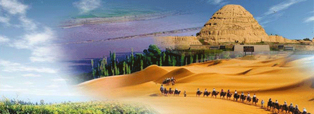
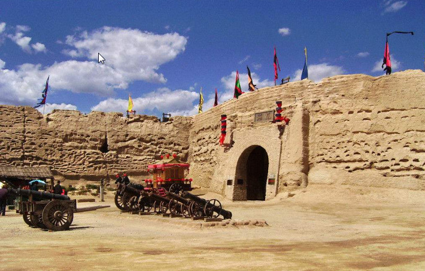
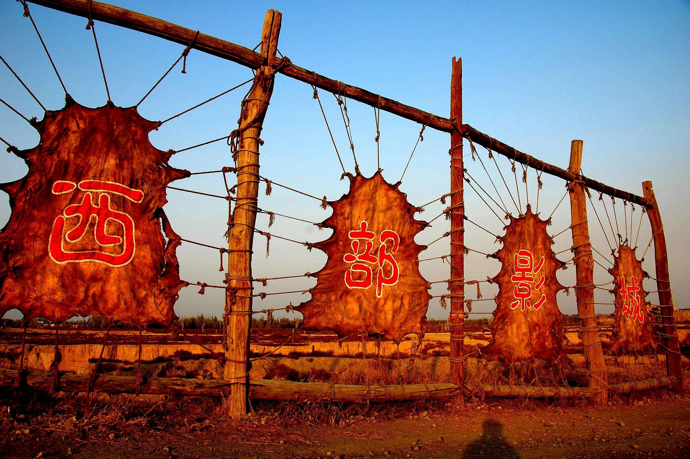
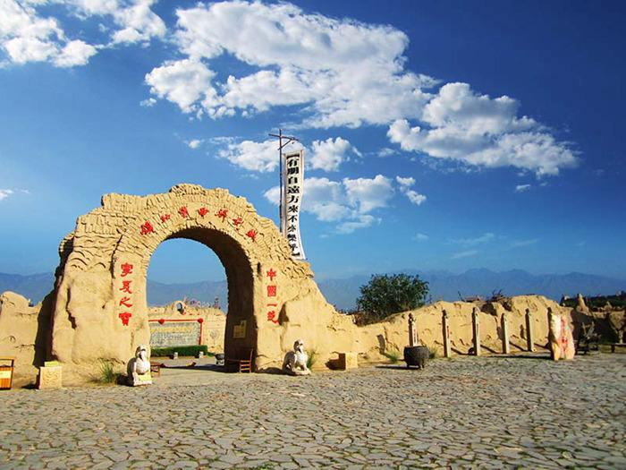

宁夏风光
NING XIA FENG GUANG
欢迎光临我的网站！ |
 |
|
|
|  |
镇北堡西部影城：距银川市35公里，是在一个原始古堡的基础上修建的。这里保持并利用了古堡原有的奇特、雄浑、苍凉、悲壮、残旧、衰而不败的景象，突出了它的荒凉感、黄土味及原始化、民间化的审美内涵，尽可能地保留了它特殊的审美价值，让电影艺术家们在这一片西部风光中心情尽兴地发挥他们的想象力和创造力。 |
|  |
宁夏镇北堡西部影城（现通称西部影视城），被誉为“东方好莱坞。在中国众多的影视城中，西部影城是中国三大影视城之一，也是中国西部唯一著名影视城。西部影视城已逐步将单纯参观型的旅游点发展成既有观光价值,又有为游客制作影视片及餐饮、购物、陶艺、骑射等多样化服务的娱乐型旅游区。 |
|  |
两堡一南一北，均坐西朝东，紧邻沿山公路东侧的老堡已被风蚀殆尽，仅存残墙断垣，形制尚存。城东西长175米，南北宽160米。向北穿过城中黄土路，是老堡瓮城遗址。再向北行200米便是新堡。新堡城池较完整，东西长170米，南北宽150米，墙体用黄土夯筑而成，高10余米。东面辟有半圆形瓮城，城门南侧有一斜坡可登上城墙。城墙宽5米，墙上筑砌有1.8米高的堞墙垛口。城墙四角原建有角楼，角楼基址依稀可见。 |
网站制作：马宁
本站只为介绍宁夏的美丽风光而创建，部分内容采集自互联网，版权归原作者所有
作者联系方式 E-mail: QQ: |